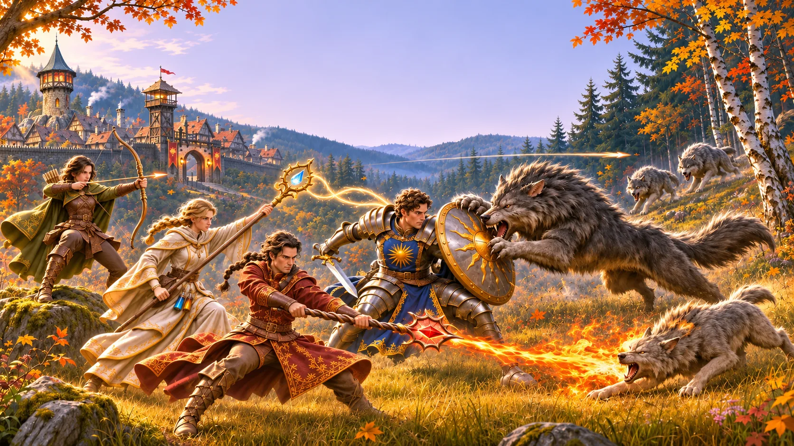
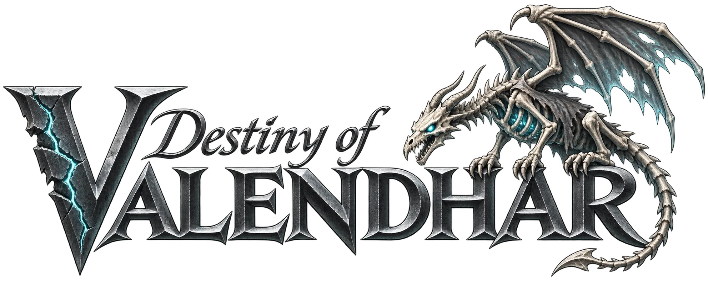

Ein Grenzdorf am Rand eines Waldes, der kühn geworden ist.
Destiny of Valendhar ist ein Fantasy-Online-MMO, das viele Spieler gleichzeitig spielen, mit Tab-Target-Kampf und vier Job-Gilden. Diese Seite zeigt seine Vertical Slice, nicht das ganze Spiel: vom Wayward Dais durch Timberwatch und den Wolfwood bis zu den Toren von Oakhaven.
Jede Klinge, jeder Bogen und jeder Zauber wird gebraucht
Du kommst als Fremder am Wayward Dais an, einem alten schwebenden Stein an der Straße vor Timberwatch, einem Holz- und Grenzdorf am Rand des Wolfwood.
Hauptmann Roland fehlen Leute, und das Rudel kommt neuerdings aus den Bäumen. Du wählst eine von vier Job-Gilden, lernst zu kämpfen und zu sammeln, dünnst die Wölfe aus, rüstest dich in der Schmiede aus und stellst dich schließlich dem Alpha in seinem Bau. Dann öffnet sich die Straße nach Osten: ein Händler, den du beschützen musst, ein Hinterhalt, den du überleben musst, ein Verlies unter dem Hügel und am Ende die Tore von Oakhaven.
Zum vollständigen Überblick- Genre
- Fantasy-Online-MMO in der dritten Person
- Kampf
- Tab-Target, Fähigkeitenleiste, Gruppenrollen
- Jobs
- Paladin, Ranger, Weißmagier, Elementarist
- Deine Figur
- Männlich oder weiblich, später auch verschiedene Völker zur Auswahl
- Spieler
- Viele Spieler gleichzeitig, online in einer Welt
- Vertical Slice
- Ein kleiner fertiger Teil des MMOs, nicht das ganze Spiel
- Look
- Bodenständige, halbrealistische Fantasy
- Engine
- Unreal Engine 5
- Verwendetes Spiele-Framework
- Vertical Third
Vier Gilden, ein Dorf
Alle vier Jobs und ihre Fähigkeiten


Was das Abenteuer ausmacht

Ein Dorf, in dem gelebt wird
Fachwerkhäuser, Kaminrauch und Brennholz unter jedem Dachvorsprung. Timberwatch ist ein echter Ort, in dem echte Arbeit getan wird.

Vier Gilden, vier Jobs
Paladin, Ranger, Weißmagier oder Elementarist. Jede Gilde hat ihr eigenes Haus, ihr Banner, ihren Trainer und ihren Übungsplatz.

Kämpfe, die man lesen kann
Tab-Target-Kampf mit einer Leiste voller Fähigkeiten. Jeder Spezialangriff zeigt sich am Boden, bevor er trifft.

Ein Wald, der älter wird
Der Wolfwood ist in Ringen angelegt. Je tiefer du gehst, desto dunkler die Bäume und desto kühner die Wölfe.

Die Straße geht weiter
Begleite einen Händlerkarren, überlebe einen Hinterhalt, säubere ein Verlies unter dem Hügel und erreiche die Tore von Oakhaven.

Die Welt
Timberwatch bewacht die Straße
Hinter einer ovalen Mauer aus angespitzten Stämmen stehen steilgiebelige Fachwerkhäuser, ein Marktplatz mit einem Sandsteinbrunnen, eine Schmiede, ein Gasthaus namens Wolf's Rest und ein Rathaus mit einem schiefergedeckten Glockentürmchen. Das Dorf lebt vom Holz und wacht über die einzige Straße nach Osten, nach Oakhaven.
Im Norden und Westen beginnt der Wolfwood: Birken und Haselsträucher am Rand, hohe Buchen und alte Eichen weiter drinnen und dunkle Fichten dort, wo der Wolfsbau liegt.
Durch Timberwatch gehenDie Vertical Slice
Vom Dais bis zu den Toren von Oakhaven
Elf Stationen auf einer Straße. Jede bringt dir etwas Neues bei, vom ersten Schritt bis zum Bosskampf und zum Verlies.

- Akt 0Das Wayward Dais„Der Stein summt. Die Straße führt nach Norden.“
- Akt 1Das Wachhaus„Hauptmann Roland hat eine Aufgabe und zu wenig Leute.“
- Akt 2Wähle deinen Weg„Stahl, Bogen, Quellwasser oder Flamme.“
- Akt 3Die Übungsplätze„Die Puppe schlägt nicht zurück. Noch nicht.“
- Akt 4Der Waldrand„Silberblatt wächst dort, wo die Birken lichter werden.“
- Akt 5Das Rudel„Graue Schatten zwischen den Buchen.“
- Akt 6Dorfleben„Felle gegen Eisen, Eisen für Armschienen.“
- Akt 7Der Alpha„Größer, als die Geschichten erzählten.“
- Akt 8Die Straße nach Osten„Ein Händlerkarren, und einer, der schon umgestürzt ist.“
- Akt 9Unter dem Hügel„Alter Stein, und dahinter etwas noch Älteres.“
- Akt 10Die Tore von Oakhaven„Das Ende der Vertical Slice.“
Ein Aushang im Wachhaus
Neben der Karte der Gegend angeheftet
„Drei Schafe an der Mühle, der Hund eines Holzfällers, und jetzt Spuren auf der Nordweide. So nah war das Rudel noch nie. Wer eine Waffe halten kann, meldet sich bei mir.“
Hauptmann Roland